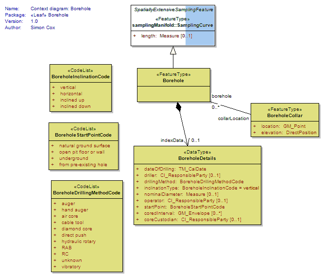
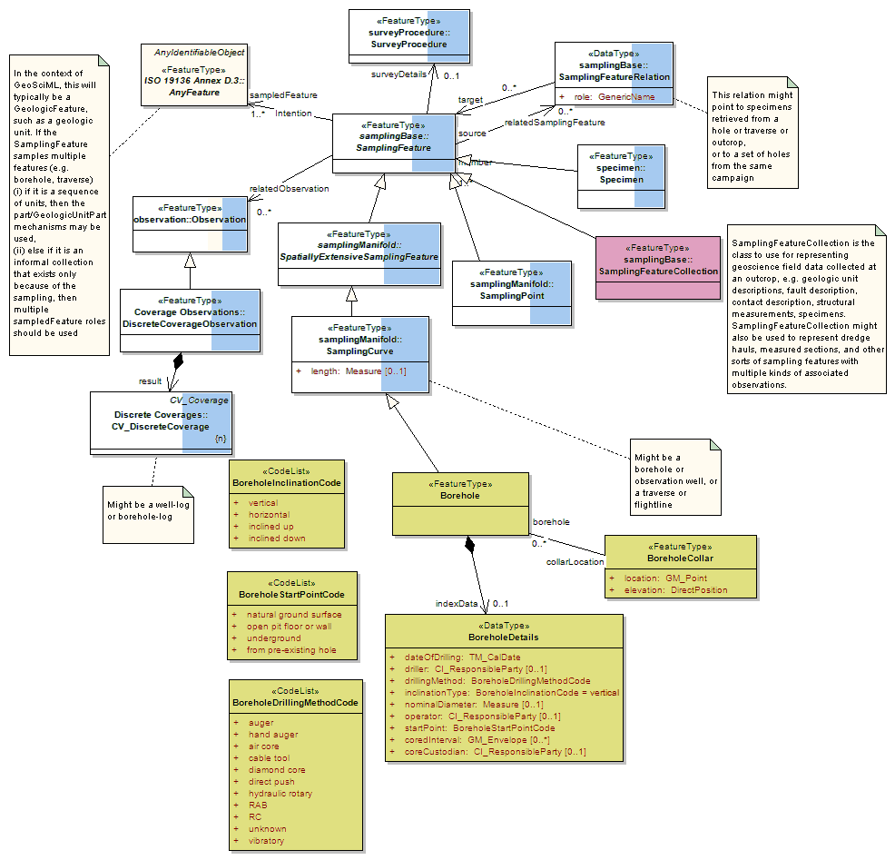
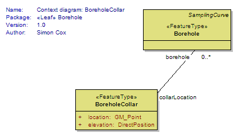

Package GeoSciML/Borehole
The GeoSciML Borehole package contains model elements for representing Boreholes. This is primarily through re-use of standard components from the (external) Observations and Measurements package.
Class Summary |
|
| <<FeatureType>> Classes | |
Borehole
<<FeatureType>>
|
A borehole is the generalized term for any narrow shaft drilled in the ground, either vertically or horizontally. |
BoreholeCollar
<<FeatureType>>
|
A Borehole Collar is a feature corresponding to the start point of a borehole. These are often plotted on a map. If a text descripiton of the location is available, which should be placed in the gml:description for that feature. If no GM_Point is available, URN:CGI:unknown should be used Implementers delivering 3-D collar locations should provide and elevation to improve interoperability. |
| <<DataType>> Classes | |
BoreholeDetails
<<DataType>>
|
Borehole specific index (or metadata) information |
| <<CodeList>> Classes | |
BoreholeDrillingMethodCode
<<CodeList>>
|
Borehole drilling method |
BoreholeInclinationCode
<<CodeList>>
|
General orientation of a borehole |
BoreholeStartPointCode
<<CodeList>>
|
|
Tagged Values |
||
| Tag | Value | Notes |
| xsdDocument | borehole.xsd | Description: Relative path to XML Schema document corresponding to this package. |
UML Diagram: Context diagram: Borehole

UML Diagram: Summary diagram: Boreholes and observations

UML Diagram: Context diagram: BoreholeCollar
